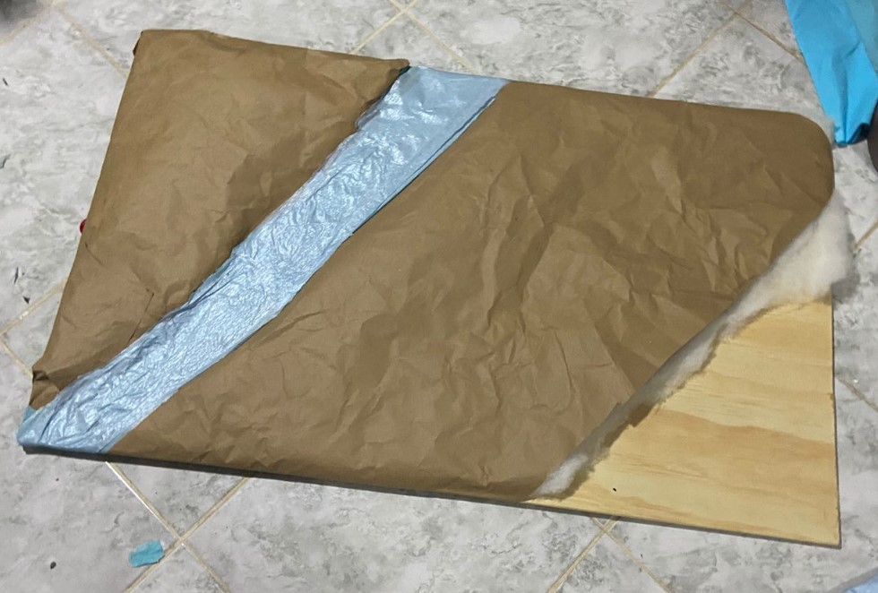
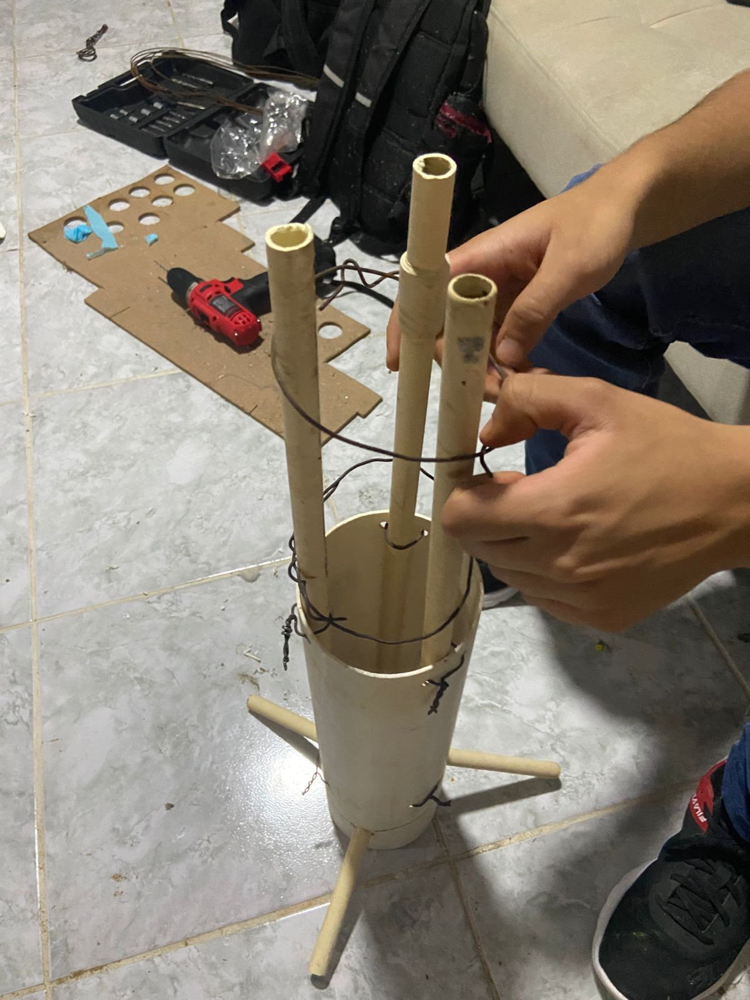
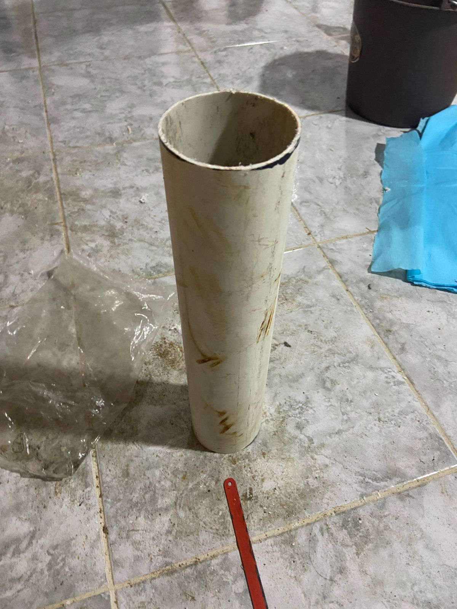

Nuestro Animatrónico
Un vistazo a nuestra interpretación de "La Cuchibruja". Navega por las imágenes en cada categoría.
Arte Conceptual
Los primeros bocetos y diseños que definieron la estética de nuestro proyecto.




Proceso de Construcción
Fotografías del ensamblaje mecánico, la instalación de la electrónica y el trabajo artesanal.


Resultado Final
El animatrónico terminado, listo para contar su leyenda en Cocotrón 2025.